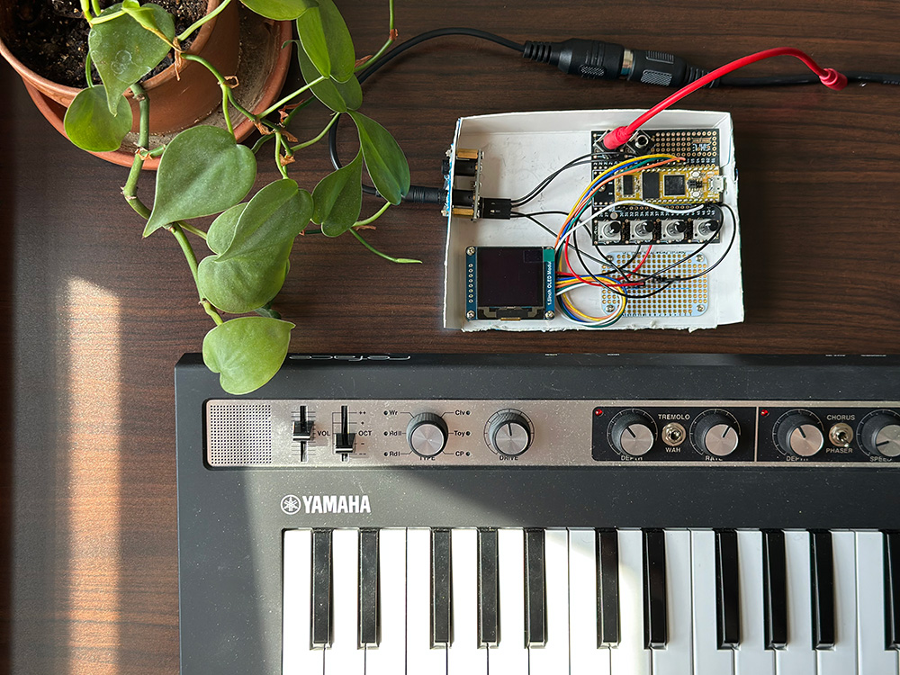

Retired Software Developer with 40 years experience leading, designing, and coding all types of software systems for defense and commercial applications. BS Computer Science, UC. MS CS Wright State. Currently prototyping lighting and sound projects.
Current projects include building programmed LED ceramic lamps and creating and programming a music synthesizer.
This piece was the result of a collaboration with ceramic artist Rachel Greider. Designed as an eye-catching centerpiece, the ceramic lamp casts vibrant shadows across the ceiling. It served as a direct precursor to our Light Portals project—an essential prototype for exploring the mathematical algorithms involved in arranging LEDs.
The LED rig features a custom circuit board, programmed algorithms for a microcontroller, and a seamless integration with the ceramic lamp form.
As a longtime keyboard player and programmer, I was interested in combining the two worlds. This prototype explores the potential of connecting a synthesizer with real time user interaction, through a DIY circuit board, with keyboard input, and external sensors.
For this demo, instead of pre-programming a song, I've rigged it to take input from a Yamaha keyboard, paired with a simple UI to tweak parameters like a traditional synth.
At the core of the project is the Daisy Seed, programmable audio hardware, designed for real time audio processing. It makes it easy to incorporate external sensors—like proximity or touch inputs—for dynamic sound modulation. It was also a fun excuse to revisit my soldering skills and build a custom circuit board to handle MIDI input and signal processing.
